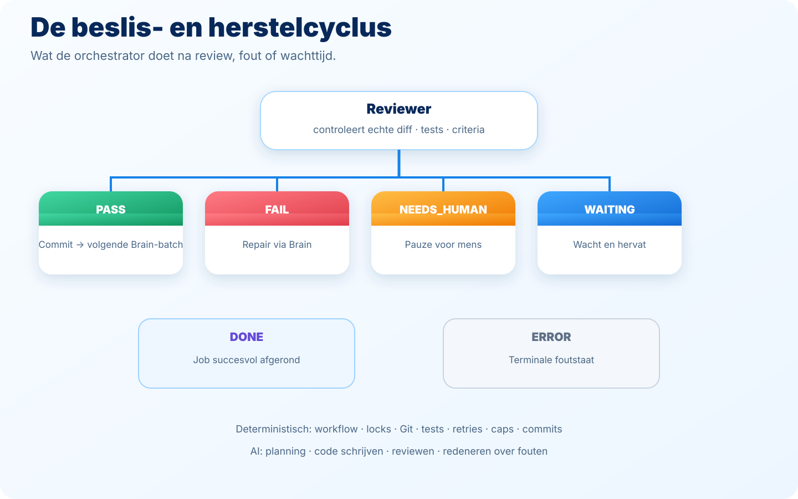

Show me under the hood
For ICT and software colleagues, and anyone curious about the technology. This is the layer with architecture, machine and models. You don't need this page for the story itself: "Just tell me what happened" and "How could AI do this itself?" are complete on their own.
The architecture in brief
All of this ran on one ordinary VM
A VM (virtual machine) is a small computer that runs in a data centre.orchestrator
The orchestrator is the traffic controller: the system that splits the work into small steps, has each step tested and checked, and only moves on once a step is genuinely good enough.
One human entry point
The assignment and the boundary conditions came from natural language. After that, execution was split into small, testable batches.
Brain, Worker, Reviewer
The orchestrator kept the roles separate. The Brain chose one bounded next batch, the Worker carried it out, and the Reviewer independently checked the real result against the acceptance criteria.
Version history as memory
Every accepted batch got a Git
Git is the logbook: a system that saves every change to the code, so you can always read back exactly what was changed and when.
Tests as the gatekeeper
Unit tests, typechecks, builds and, where possible, Playwright end-to-end tests decided whether a step could move on to the next phase.
For the connection to tools and models there was a Hermes
Hermes is the toolbox here: a connection that lets the AI reach tools and models, like a bridge between the orchestrator and the programs that do the actual work.API
An API is an agreement that lets two programs talk to each other, for example between the orchestrator and an AI model.model provider
The model provider is the company that supplies the AI model that does the reasoning and writing.
Numbers across the five jobs together: all five challenges reached DONE, spread over 37 autonomous build batches and 155 Claude calls, running on one VM with 2 vCPU and 3.7 GiB RAM.

The machine and the tools
The real environment during the challenge, for anyone who wants the details:
| Component | Actual environment during the challenge |
|---|---|
| Compute | 2 vCPU, 3.7 GiB RAM, 2 GiB swap |
| Disk | 38 GB root volume, roughly 28 GB used during documentation |
| OS/kernel | Linux 7.0.0-29-generic x86_64 |
| Python | 3.14.4 |
| Node / npm | Node v24.21.0, npm 11.19.0 |
| Git | Git 2.53.0 |
| Browser testing | Playwright + headless Chromium, including software WebGL for 3D tests |
| AI tooling | Claude for Brain/Reviewer; Worker routable to Claude, Gemini 3.8 Flash or Codex; ChatGPT as the entry point |
Models: role and provider kept separate
Brain and Reviewer run via Claude. Only the Worker is provider-selectable with auto, Claude, Gemini or Codex. In auto mode, LOW/NORMAL work can go to Gemini 3.8 Flash; higher complexity and certain escalations go to Claude Sonnet. Git safety, evidence, review and commits stay with the orchestrator.
Desktop Commander: a separate tool bridge
Alongside the autonomous orchestrator, Desktop Commander Remote ran on the same VM. That let ChatGPT, when explicitly asked, directly view and change files, start or follow processes, read logs and run terminal actions. That was mainly useful for management, diagnosis and quick changes during the challenge, separate from the orchestrator's own autonomous state-machine loop.
The prompt chain: from idea to executable assignment
The human prompt
A prompt is an instruction in plain language, written or spoken, that you give to AI, for example a task or question that should produce a result.
- IdeaShow colleagues what AI can do beyond prompt-in/prompt-out.
- Short conversationHuman + AI choose five suitable software challenges.
- AI works it outChallenge briefs, acceptance criteria and execution prompts.
- OrchestratorAutonomous building, testing, reviewing and repairing.
View the full prompt chain, including the original prompts as they were actually used.
The autonomous cycle: plan, build, test, check, fix, record
Part of the system is deliberately deterministic, another part is AI reasoning within bounded roles:
| Deterministic control plane | AI reasoning |
|---|---|
| workflow phases, locks and state transitions | choosing the next bounded batch |
| Git safety, scope checks and commits | writing or changing code |
| running tests, collecting evidence, retries and caps | reviewing the real result and reasoning about repairs |

A concrete example in GitHub
You don't have to take our word for the architecture. For the 3D Path Planner, the build history is simply there to read back: the sequence 01-core-planner-and-scenes → 02-threejs-viewer-and-controls → 03-exploration-playback-and-drone-animation → 04-playwright-e2e-tests → 05-visual-polish-and-demo-readiness → 06-pwa-mobile-readiness → final audit and acceptance. That's the Brain–Worker–Evidence–Reviewer–Commit loop visible as Git history.
Source code and repositories
The full source code, tests and commits for all five challenges are public on GitHub:
- 01 MOSSE Tracker — source code + tests
- 02 Rubik 2x2 — solver + 3D
- 03 Electron Dose Lab — Monte Carlo demo
- 04 3D Path Planner — A* + Three.js
- 05 Maze Chase — game AI + polish
Read the full technical story on the current site for all architecture details, diagrams and examples.
Limitations
Not every result suits every purpose. The Electron Dose Lab demo, for example, is a physics research demo based on public NIST data: not a clinical device and not a clinically validated dosing system.
Provider flexibility also doesn't go equally far everywhere: switching between model providers today applies to the Worker role, not to every role. Brain and Reviewer currently run fixed via Claude.